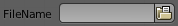
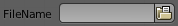

How to open a netCDF file
1. Get started
First, you will have to download the following blender file, which contains the complete
pipeline to read netCDF files. You can even download a netCDF file if you don't already have
one.

netCDF.blend
earth.nc
2. Run the example
You just need to open the blender file, but double-clicking on it won't work, because
that would open blender without importing vtk. So you will have to follow these steps.
Open blender from the terminal.
In the top bar choose
In the top right of the window click
You should see something like this.
 Now that you have the node tree ready (the one in the bottom part of the blender window) we can load your data.
Now that you have the node tree ready (the one in the bottom part of the blender window) we can load your data.
Open blender from the terminal.
In the top bar choose
file > open
and locate the netCDF file. In the top right of the window click
open blender file
.You should see something like this.
3. Load data
Now it's time to select your file and bring your data into blender
Search the tree for the netCDFCFReader node and find the

Click the button next to the input field, with the folder icon.
Navigate the file picker and choose your file.
Search the tree for the toBlender node and find the

Click the button, you should see the nodes changing color. Look in the console and make sure no errors are raising. At the end of the process, you should see the 3D view updating. However note that if you downloaded the netCDF file from this page you won't probably see any change. Now that you know how, you can open your own data.
Search the tree for the netCDFCFReader node and find the
FileName
property. 
Click the button next to the input field, with the folder icon.
Navigate the file picker and choose your file.
Search the tree for the toBlender node and find the
update
button.Click the button, you should see the nodes changing color. Look in the console and make sure no errors are raising. At the end of the process, you should see the 3D view updating. However note that if you downloaded the netCDF file from this page you won't probably see any change. Now that you know how, you can open your own data.